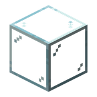

#对称之杖：一放就镜像复制。
参数
工艺机械合成
作用镜像放置
详细教程
怎么获得
走机械合成，图纸是五行的竖条：上排玻璃，第二排玻璃 + 末影珍珠 + 玻璃，第三排精密构件，第四排黄铜锭，第五排黑曜石，合计 3 玻璃 + 1 末影珍珠 + 1 精密构件 + 1 黄铜锭 + 1 黑曜石。
精密构件是后期件，要黄铜、电子管与铁件组合，所以这根杖属于「后期建筑党玩具」，不便宜。
怎么用
把它放在快捷栏里（不必手持），你放的每个方块都会按镜面自动复制一份；右键一个面可以建立镜面，再右键可以移动，空手右键取消。
潜行右键打开配置，可以调镜面数量与朝向；做对称建筑时先把中轴定好，一放就是两半，省掉一半的手工。
搭配
和蓝图加农炮搭配：先用手杖搭出对称主体，再把结构存成蓝图批量复制，大型对称建筑能少画一半图。
它只镜像「你放的方块」，不镜像机器内部状态；复制产线时机器里的物品与设置不会跟过去，得另外配。